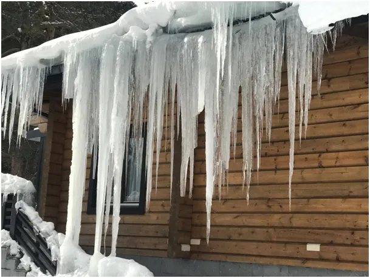
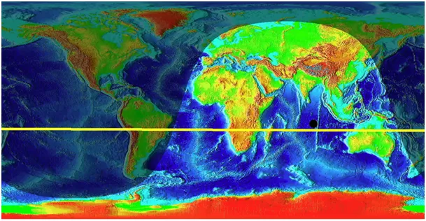
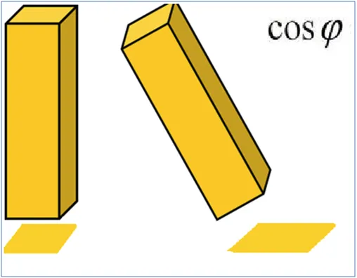
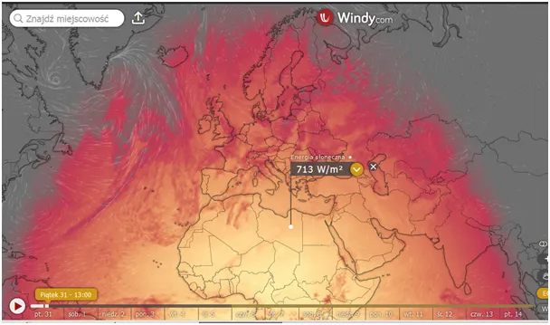
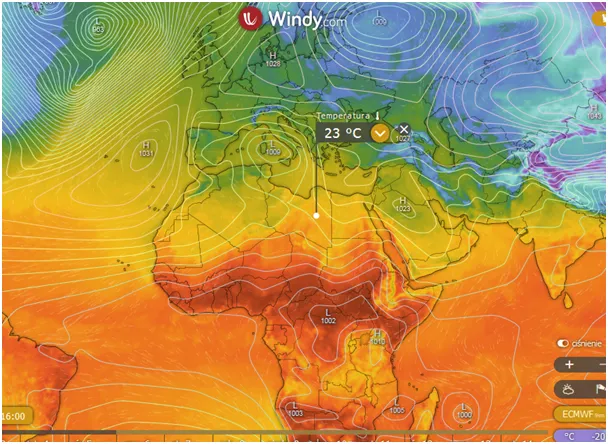

Czas sopli.
Żółta linia na pierwszej mapie to dzisiejsza droga Słońca na ziemskim niebie, nad tymi punktami Słonce świeci w zenicie, czyli pionowo z góry.

Jest to już siedem stopni na północ od południowego Zwrotnika Koziorożca, gdzie Słonce osiąga swój kres w grudniu. Druga mapka to natężenie promieniowania słonecznego mierzonego w watach. Dzięki malejącemu kątowi padania promieni słonecznych ta sama wiązka promieniowania ma do ogrzania coraz mniejszy obszar, tym samym nagrzewa grunt szybciej. https://pawelklimczewski.pl/2023/01/24/wszytko-w-kosmosie-dzieje-sie-przez-ten-nielubiany-kosinus-fi/

Latem, gdy Słońce zawiśnie pionowo nad Saharą, będziemy się modlić by powietrze stamtąd do nas nie dotarło. Teraz natężenie promieniowania tam zaczyna przekraczać 700 watów na metr kwadratowych, tyle co u nas latem, co pozwala nagrzać atmosferę przy gruncie do ponad dwudziestu stopni Celsjusza. Przy sprzyjających wiatrach powietrze to dotrze do Krety i Grek Zorba będzie mógł wykrzyczeć: „Trzeciego lutego! W dzień świętego Symeona! Wtedy właśnie wieje pierwszy, ciepły powiew wiatru z Afryki. Czujesz go, szefie?

To na Krecie, potem jak to w pogodzie znów dmuchnie z północy i przez kilka tygodni żywioły będą się ścierały przynosząc na południu liczne burze i desze. To dlatego "Matki Bożej Gromnicznej" przypada w tym momencie, bo to nad Morzem Śródziemnym powstawała liturgia i tradycja chrześcijańska.

Na okres tych starć żywiołów nie chowamy czapek i szalików bo przez nasz kraj będzie wędrowało z północy na południe zimne arktyczne powietrze aby się ogrzać nad Afryką, a potrwa to do połowy maja. Przed nami czas sopli, gdy po zachodzie Słońca topniejący na dachach śnieg zostaje zaskoczony szybkim spadkiem temperatury i krople wody tworzą naturalne dzieła sztuki .
Paweł Klimczewski